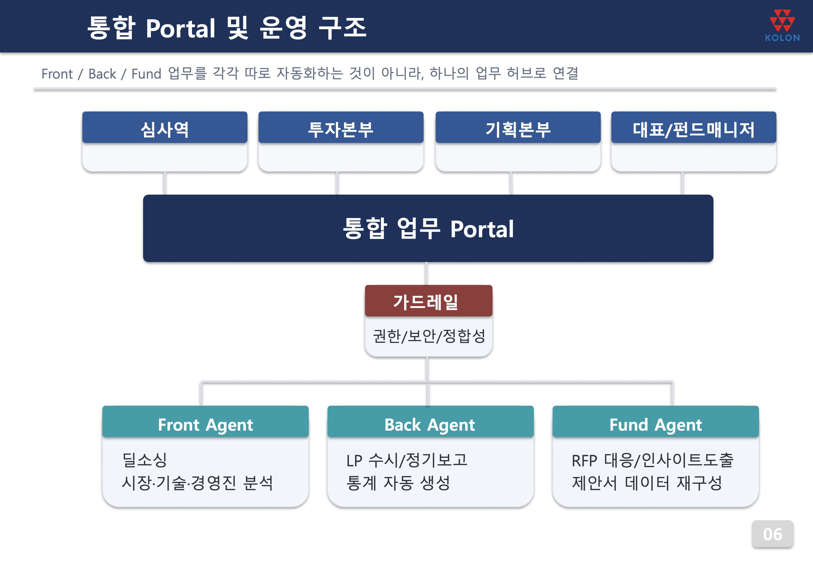

벤처캐피탈(VC)은 유망한 스타트업을 찾아 투자하는 회사다. 그런데 30년 경력의 사장님이 보기에, 투자를 결정하는 보고서와 자료 양식은 30년 전과 거의 그대로였다. 심사역들은 시장 조사, 자료 정리, 출자자 보고서 작성 같은 반복 작업에 밤늦게까지 매달렸다. "첨단에 투자하면서 우리는 가장 구식으로 일한다"는 역설이 출발점이었다.
서울대 청년 교육생 6명과 회사 임직원이 팀을 이뤄 2주에 한 번씩 만나며 업무를 자동화했다. 투자 검토(프론트), 회사 운영(백오피스), 펀드 관리 세 영역에 각각 AI 에이전트를 두고, 이를 하나의 "통합 업무 포털"로 묶는 설계다. 상장(IPO) 시장 동향을 매일 자동 정리하는 시스템은 완성됐고, 비슷한 회사들과 가치를 비교하는 분석도 거의 완성됐다. 고객 정보를 다루므로 보안 규정을 지키는 데에만 한 달을 쏟았다. 원칙은 분명하다. 발로 뛰는 소싱과 최종 투자 결정은 사람이 하고, 그 사이의 반복 작업을 AI가 맡는다.
투자심사 보고서 작성이 2주에서 1주로 줄어든다. 사장님은 이것을 "시간 단축"이 아니라 "생각할 시간의 확보"라고 불렀다. 더 좋은 투자 판단을 위해 깊이 고민할 여유가 생긴다는 것이다. 목표는 인력 감축이 아니라 "야근 없는 회사"다.